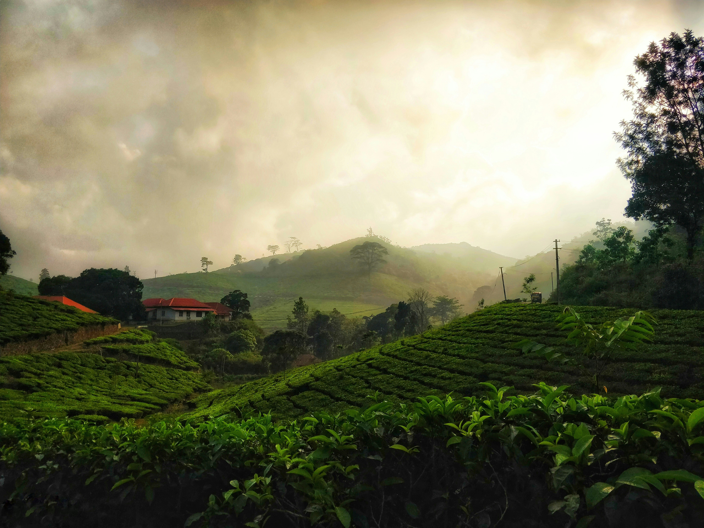

Across Bharat
Travel Stories & Reflections
India is a continent of stories. These are mine — from mountains to coasts, temples to bazaars, silence to chaos.

Featured Story
Kerala
A Slow Journey Through Wayanad
From mist-covered roads to coffee plantations and quiet valleys, Wayanad feels like a place that teaches you how to slow down and listen.
Read More ↗
Goa
Sunset, Sea, and Quiet Roads
A relaxed coastal escape where beaches, old churches, and evening skies set the rhythm.
Read More ↗
Northeast India
The First Mist of Meghalaya
A journey through cloud-covered hills, waterfalls, and the calm beauty of the northeast.
Read More ↗Arunachal Pradesh
Among the Mountains of Arunachal
Wide roads, high passes, and landscapes that make every mile feel unforgettable.
Read More ↗